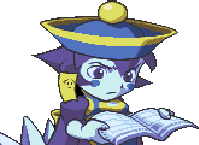

Seja bem vindo a página oficial do Jooj: The Game™. O mais novo jogo de luta da JoojNetwork.
Um jogo de luta fácil e divertido, dispense as horas de treino que os jogos de luta mais complexos tomam e divirta-se aprendendo sobre o gênero.
É um jogo que precisa de dois jogadores. Chame seu amigo e o desafie!
Você pode acessar nosso jogo aqui
Por que jogar Jooj: The Game™?

Jogos de luta são populares desde a época em que os arcades dominavam os centros das cidades, eram a origem dos grandes duelos entre jogadores experientes e fichas eram cobradas.
Jooj: The Game™ traz essa experiência em seu navegador, sem custar exatamente nada. O tutorial é o único passo a se realizar antes de jogar o jogo.
Além disso, muitos dos conceitos apresentados aqui são aplicados em todos os jogos de luta, bem como os termos mostrados em nosso tutorial.
Inspiração
A primeira vista, pode parecer estranho um jogo com apenas dois botões. A quantidade de golpes em um único personagem pode assustar a maioria dos novatos.
A empresa Capcom (desenvolvedora da série Street Fighter), então, publicou em 1997, o jogo Super Gem Fighter Mini Mix, para a placa CPS-2, onde os combos eram realizados
combinando dois botões, sendo esses de soco e chute
e chute  .
.
Demonstração de como o Super Gem funciona: